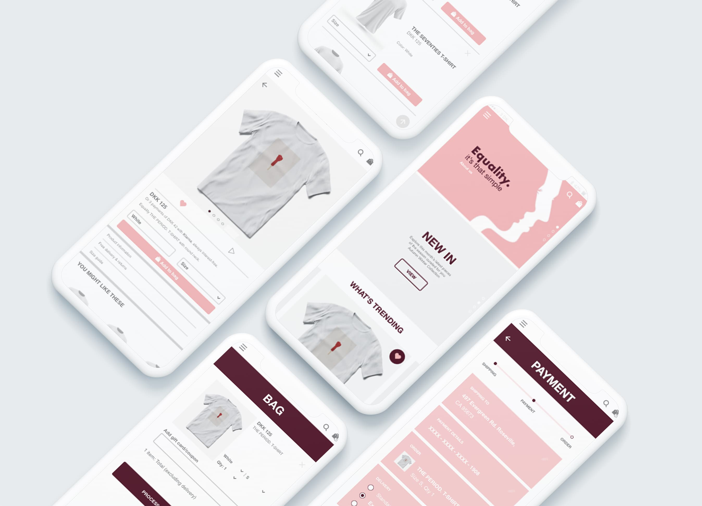

tema 03
UX
Dette tema handlede om UX, der gav en grundlæggende forståelse for samspillet mellem bruger og brugergrænseflader, samt hvilke teorier, værktøjer og metoder man kan benytte sig af til research, design og test i en digital produktudvikling. Vi lærte bl.a. om desk research, surveys og interviews for at kunne indsamle data om og indsigt i, hvad brugere gør og hvorfor. Det var bl.a. tænke-højt testen, der er specielt god til at give viden om brugerens adfærd og erfaringer med et produkts usability. Desuden lærte vi også at dokumentere vores designprocesser og løsning, samt at pitche denne. Det var også her, at vi blev introduceret til copy- og micro copywriting.
Baseret på de UX insigter jeg havde indsamlet, blev det tid at udarbejde og levere en færdig prototype.
03.03.02 endelig prototype
03.01.05 idé
I denne opgave skulle vi på baggrund af UX research, behandling og indsigter fra disse, lave nogle udkast til en idé for at løse casens problemstilling. Emnet for opgaven var at designe en t-shirt shop.

Fra UX Research til Idé
For at få det bedste resultat til shop måtte jeg først tænke på, hvilke udfordringer, der er associeret med e-handel. Her fandt jeg vha. en survey ud af, at udfordringer ved onlineshopping bl.a. er mangel på en size-guide, at alle webshops har et for ens udtryk - hvorfor jeg ønksede et USP (Unique Selling Proposition) ulig andres. Derudover kan det også være et problem, at det ikke er muligt at filtrere produkterne, hvilket besværliggør processen, hvis man eksempelvis kun ønsker at se på langærmede t-shirts.
Lightning Demos
Nu blev det tid til at begynde på Lightning Demos. Her fandt jeg en liste produkter, som jeg fandt inspirerende fra andre hjemmesider og/eller apps. De tre jeg fandt mest interessante var ASOS' feature: favoritter/gemte varer, dernæst Trendsales appens features: favoritter, filter og my trades og til sidst Facebooks feature: marketplace, hvor man kan se tingenes lokation. Alle tingene giver et godt overblik over ens favorit ting fra hjemmesiden.


skitser
Efter Lightning Demos var det tid til at lave nogle skitser til, hvordan hjemmesiden skulle opbygges. Derefter prøvede jeg kræfter med Crazy 8 metoden, der er en øvelse, hvor man har 8 minutter til at skitsere 8 distinkte idéer. Målet er at komme videre fra sin første idé, som oftest vil vise sig at være den mindst innovative, og løbende generere en bred vifte af løsninger på ens idé. Crazy 8 metoden resulterede i, at jeg udplukkede de bedste idéer genereret under øvelsen.
03.03.02 Endelig prototype
Baseret på de brugertest jeg havde lavet og se insights jeg havde fået gennem forløbet, blev det tid til at optimere min prototype og levere en færdig prototype.
03.03.03 Pitch

01 UX-research
Denne del af pitchen kan anses som værende hovedet af pitchen. Her fortalte jeg om de indsigter, jeg havde fået gennem min survey, Lightning Demos osv. Jeg fandt eksempelvis ud af, at mangel på size-guide kan være en udfordring ved e-handel, da det kan hindre et køb. Jeg fandt også ud af, at features som favoritter/gemte varer og filtrerings muligheder af produkterne på hjemmesiderne meget behjælpelige.
02 UX/UI-design
Dette er kroppen, og der hvor det kreative ligger. Ved dette punkt gennemgik jeg min prototype, snakkede om valgene og metoderne jeg brugte til at komme frem til resultatet. Det var også her, at der blev talt om målgruppe, USP, produktegenskaber og meget mere. Desuden blev der også givet en uddybning af indholdselementer såsom copy, microcopy og tagline.
03 UX-test
Det tredje og sidste punkt i pitchen var UX-test, også henvist til som pitchens hale. Her fortalte jeg, om de konklusioner jeg havde draget på bl.a. tænke-højt-testen, som bl.a. indholdt, at der manglede at kunne fjernes et like, hvis man kan havde gemt et produkt til sin favorit/gemte varer side. Så blev der også diskuteret omkring det samlede indtryk af UX-webshop løsningen, hvilket var udelukkende positive ord.